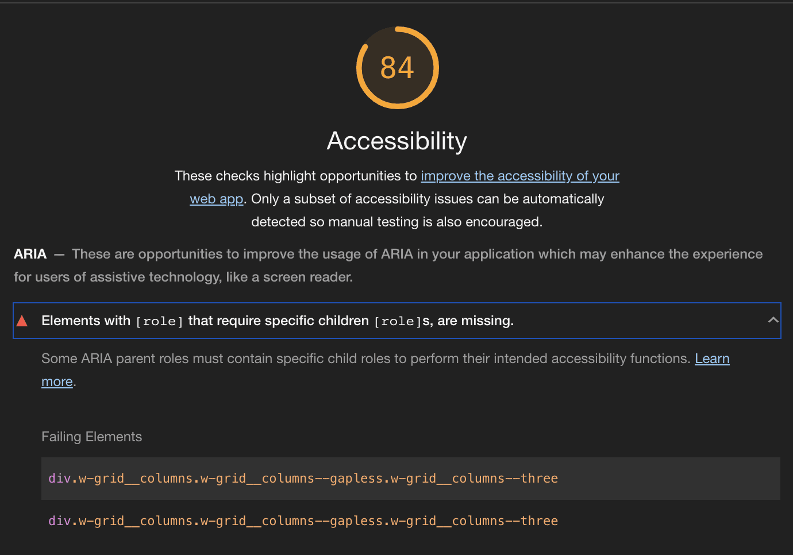
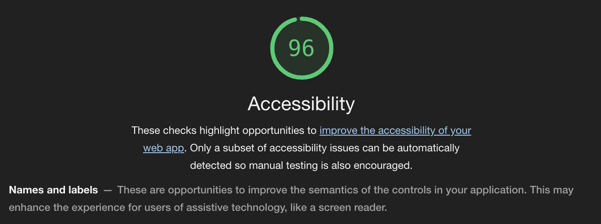

Elements with [role] that require specific children [role]s, are missing 해결하기
Lighthouse를 통해 측정한 접근성에서 ARIA 관련 항목 확인하고 내 홈페이지에 반영해보자

웹 페이지를 만들거나 운영하다 보면 하나부터 열까지 다 직접 문들기 때문에 무엇을 만들지 뺄지 광장히 자유롭게 설정할 수 있다. 그래서 맘에 안들면 바꾸면 된다. 이번에는 내 맘대로 바꾸는 것이 아니라 Lighthouse라는 도구로 검출 된 내용을 내 웹 페이지에 반영해보려고 한다.
Key Term: 이 글을 읽는 살마들은 아마 웹 접근성이나 성능에 관심이 많은 사람일 것이라 생각한다. 내 웹 페이지가 접근하기 쉬운지 어려운지, 어렵다면 어떻게 하면 쉽게 만들 수 있는지 분석해주는 툴이 바로 Lighthouse이다.
Lighthouse 로 내 웹페이지 측정해보기 #

혹시 Lighthouse를 처음 접하거나 사용해본적이 없는 사람들을 위해 간단한 사용법을 적어두었다. 1번 혹은 2번은 내가 원할 떄 브라우저에서 바로 보거나 주소를 입력해서 타 사이트를 분석해 볼때 유용하게 사용할 수 있다.
- 크롬에서 내 웹 페이지 접속 > 개발자 도구 > Audit 탭 선택 > 분석
- web.dev 접속 > Measure 메뉴 > 내 웹 페이지 주소 입력
- 크롬 웹스토어에서 Lighthouse 설치
- 웹 페이지를 빌드 과정에 통합하기: Lighthouse CI
이 사진은 내 홈페이지인 YUNHA Industries 사이트를 크롬에서 Lighthouse로 분석한 결과이다.
영어로 써있는데 내용은 [role]을 사용하는 요소는 그에 해당하는 하위 [role]을 가지고 있어야 한다는 것이다.
예를 들어 여러 개의 탭을 표현하는 요소가 있다면 그 안에는 각 탭들이 있을 것이다.
아래 코드를 보면 div 태그에 role="tablist"이 들어가 있다. 그래서 하위 요소인 button에 role="tab"을 넣어준 것을 볼 수 있다.
<div role="tablist">
<button role="tab" aria-selected="true" aria-controls="tab-1-pane" active>
Tab 1
</button>
<button role="tab" aria-selected="false" tabindex="-1" aria-controls="tab-2-pane">
Tab 2
</button>
<button role="tab" aria-selected="false" tabindex="-1" aria-controls="tab-3-pane">
Tab 3
</button>
</div>내 홈페이지에 적용하기 #
이제 실제 내 홈페이지 코드를 살펴보자. 나는 내 글들을 표현할 때 카드 형식을 쓰는데 여러 카드를 둘러싸는 태그에 role="list"를 넣어주었다.
하지만 하위 카드 요소에 role이 지정되어 있지 않아서 role="listitem"을 추가해 주었다.
<div class="w-grid w-pb--std">
<div class="w-grid__columns w-grid__columns--gapless w-grid__columns--three" role="list">
<a href="${url}" class="w-card" role="listitem">
<article class="w-post-card">
<div
class="w-post-card__cover ${thumbnail &&
`w-post-card__cover--with-image`}"
>
${thumbnail && renderThumbnail(url, thumbnail, alt)}
<h2
class="${thumbnail
? `w-post-card__headline--with-image`
: `w-post-card__headline`}"
>
${md(data.title)}
</h2>
</div>
<div class="w-post-card__desc">
<p class="w-post-card__subhead">
${md(data.subhead)}
</p>
</div>
</article>
</a>
...
</div>
</div>수정후에 다시 Lighthouse를 측정한 결과는 만족스웠다.

정리하며.. #
이상으로 웹 접근성 향상을 위해 role을 어떻게 사용하지 알아보았다. 사실 ARIA는 일반 사용들이 체감하기 어려운 부분일 수 있지만 맹인, 문맹 혹은 학습장애가 있는 사람들에게 유용한 보조 기술로 제공하는데 중요한 역할을 한다. 뿐만 아니라 웹이 모니터나 모바일 등 화면에 머무르는게 아니라 구글 어시스턴트나 시리와 같은 음성 기술과도 결합하여 사용되기 떄문에 이러한 접근성을 고려하여 웹 페이지를 설계하는 것은 중요하다. 지금은 role에 대한 것만 수정하였지만 차츰 ARIA에 대한 부분을 반영하여 웹 페이지의 접근성을 향상시켜 가야겠다.
참고 자료들 #
- Elements with an ARIA [role] that require children to contain a specific [role] are missing some or all of those required children - web.dev
- W3C ARIA 스펙
- ARIA - MDN web docs
- ARIA 소개 - developer google
- Screen reader
메인 이미지는 Pixabay로부터 받은 Anemone123님의 이미지 입니다.